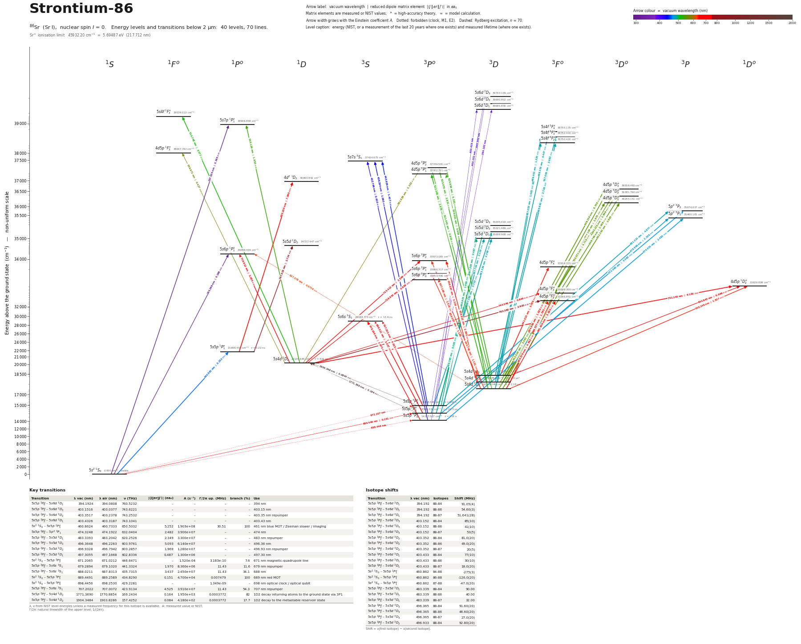

Strontium-86 energy level diagram
Energy levels and transitions of neutral 86Sr (Sr I, nuclear spin I = 0): 40 levels and 70 lines below 2 µm, each with its vacuum wavelength, frequency and, for 64 of them, the reduced dipole matrix element. Level energies come from the NIST Atomic Spectra Database; transition rates are 57 NIST, 8 measured. Neutral strontium is also the starting point for loading Sr+ ion traps by photoionisation.
Hover a line or a level to isolate it, click to keep it selected. Scroll to zoom, drag to move.

Download: diagram (PDF) diagram (SVG) transitions (CSV) levels (CSV) source code

Key transitions of 86Sr
| Transition | λ vac (nm) | λ air (nm) | ν (THz) | |⟨J‖er‖J′⟩| (ea₀) | A (s⁻¹) | Γ/2π up. (MHz) | branch (%) | Use |
|---|---|---|---|---|---|---|---|---|
| 5s5p 3P°0 – 5s6d 3D1 | 394.1924 | 394.0808 | 760.5232 | – | – | – | – | 394 nm |
| 5s5p 3P°2 – 5s6d 3D3 | 403.1516 | 403.0377 | 743.6221 | – | – | – | – | 403.15 nm |
| 5s5p 3P°2 – 5s6d 3D2 | 403.3517 | 403.2378 | 743.2532 | – | – | – | – | 403.35 nm repumper |
| 5s5p 3P°2 – 5s6d 3D1 | 403.4326 | 403.3187 | 743.1041 | – | – | – | – | 403.43 nm |
| 5s2 1S0 – 5s5p 1P°1 | 460.8624 | 460.7333 | 650.5032 | 5.252 | 1.903e+08 | 30.51 | 100 | 461 nm blue MOT / Zeeman slower / imaging |
| 5s5p 3P°0 – 5p2 3P1 | 474.3248 | 474.1922 | 632.0404 | 2.482 | 3.900e+07 | – | – | 474 nm |
| 5s5p 3P°0 – 5s5d 3D1 | 483.3393 | 483.2042 | 620.2526 | 2.349 | 3.300e+07 | – | – | 483 nm repumper |
| 5s5p 3P°2 – 5s5d 3D3 | 496.3648 | 496.2263 | 603.9761 | 5.093 | 6.140e+07 | – | – | 496.36 nm |
| 5s5p 3P°2 – 5s5d 3D2 | 496.9328 | 496.7942 | 603.2857 | 1.969 | 1.280e+07 | – | – | 496.93 nm repumper |
| 5s5p 3P°2 – 5s5d 3D1 | 497.3055 | 497.1668 | 602.8336 | 0.487 | 1.300e+06 | – | – | 497.30 nm |
| 5s2 1S0 – 5s5p 3P°2 | 671.2065 | 671.0212 | 446.6471 | – | 1.520e-04 | 3.183e-10 | 7.6 | 671 nm magnetic-quadrupole line |
| 5s5p 3P°0 – 5s6s 3S1 | 679.2894 | 679.1020 | 441.3324 | 1.970 | 8.360e+06 | 11.43 | 11.6 | 679 nm repumper |
| 5s5p 3P°1 – 5s6s 3S1 | 688.0211 | 687.8313 | 435.7315 | 3.437 | 2.450e+07 | 11.43 | 34.1 | 688 nm |
| 5s2 1S0 – 5s5p 3P°1 | 689.4491 | 689.2589 | 434.8290 | 0.151 | 4.700e+04 | 0.007479 | 100 | 689 nm red MOT |
| 5s2 1S0 – 5s5p 3P°0 | 698.4456 | 698.2530 | 429.2281 | – | – | 1.349e-09 | – | 698 nm optical clock / optical qubit |
| 5s5p 3P°2 – 5s6s 3S1 | 707.2022 | 707.0072 | 423.9134 | 4.525 | 3.910e+07 | 11.43 | 54.3 | 707 nm repumper |
| 5s5p 3P°1 – 5s4d 1D2 | 1771.3690 | 1770.8854 | 169.2434 | 0.164 | 1.950e+03 | 0.0003772 | 82 | 1D2 decay returning atoms to the ground state via 3P1 |
| 5s5p 3P°2 – 5s4d 1D2 | 1904.3484 | 1903.8286 | 157.4252 | 0.084 | 4.180e+02 | 0.0003772 | 17.7 | 1D2 decay to the metastable reservoir state |
λ, ν from NIST level energies unless a measured frequency for this isotope is available. A: measured value or NIST. Γ/2π: natural linewidth of the upper level, 1/(2πτ).
Isotope shifts
| Transition | λ vac (nm) | Isotopes | Shift (MHz) |
|---|---|---|---|
| 5s5p 3P°0 – 5s6d 3D1 | 394.192 | 88-84 | 91.05(4) |
| 5s5p 3P°0 – 5s6d 3D1 | 394.192 | 88-86 | 54.60(3) |
| 5s5p 3P°0 – 5s6d 3D1 | 394.192 | 88-87 | 51.641(28) |
| 5s5p 3P°2 – 5s6d 3D3 | 403.152 | 88-84 | 85(10) |
| 5s5p 3P°2 – 5s6d 3D3 | 403.152 | 88-86 | 41(10) |
| 5s5p 3P°2 – 5s6d 3D3 | 403.152 | 88-87 | 53(5) |
| 5s5p 3P°2 – 5s6d 3D2 | 403.352 | 88-84 | 81.0(20) |
| 5s5p 3P°2 – 5s6d 3D2 | 403.352 | 88-86 | 49.0(20) |
| 5s5p 3P°2 – 5s6d 3D2 | 403.352 | 88-87 | 20(5) |
| 5s5p 3P°2 – 5s6d 3D1 | 403.433 | 88-84 | 77(10) |
| 5s5p 3P°2 – 5s6d 3D1 | 403.433 | 88-86 | 30(10) |
| 5s5p 3P°2 – 5s6d 3D1 | 403.433 | 88-87 | 18.0(20) |
| 5s2 1S0 – 5s5p 1P°1 | 460.862 | 84-88 | -275(3) |
| 5s2 1S0 – 5s5p 1P°1 | 460.862 | 86-88 | -126.0(20) |
| 5s2 1S0 – 5s5p 1P°1 | 460.862 | 87-88 | -47.0(20) |
| 5s5p 3P°0 – 5s5d 3D1 | 483.339 | 88-84 | 90.00 |
| 5s5p 3P°0 – 5s5d 3D1 | 483.339 | 88-86 | 40.00 |
| 5s5p 3P°0 – 5s5d 3D1 | 483.339 | 88-87 | 32.00 |
| 5s5p 3P°2 – 5s5d 3D3 | 496.365 | 88-84 | 91.60(20) |
| 5s5p 3P°2 – 5s5d 3D3 | 496.365 | 88-86 | 46.60(20) |
| 5s5p 3P°2 – 5s5d 3D3 | 496.365 | 88-87 | 27.0(20) |
| 5s5p 3P°2 – 5s5d 3D2 | 496.933 | 88-84 | 92.80(20) |
Shift = ν(first isotope) − ν(second isotope).
All 86Sr transitions below 2 µm
| Lower level | Upper level | λ vacuum (nm) | λ air (nm) | ν (THz) | Type | |⟨J‖er‖J′⟩| (ea₀) | A (s⁻¹) | Branching (%) | Source of matrix element / A |
|---|---|---|---|---|---|---|---|---|---|
| 5s2 1S0 | 5s7p 1P°1 | 257.0241 | 256.9471 | 1166.3983 | E1 | 0.365 NIST | 5.300e+06 NIST | – | NIST ASD (accuracy B) |
| 5s2 1S0 | 5s6p 1P°1 | 293.2689 | 293.1831 | 1022.2444 | E1 | 0.266 NIST | 1.900e+06 NIST | – | NIST ASD (accuracy C+) |
| 5s5p 3P°0 | 5s6d 3D1 | 394.1924 | 394.0808 | 760.5232 | E1 | – | – | – | – |
| 5s5p 3P°2 | 5s6d 3D3 | 403.1516 | 403.0377 | 743.6221 | E1 | – | – | – | – |
| 5s5p 3P°2 | 5s6d 3D2 | 403.3517 | 403.2378 | 743.2532 | E1 | – | – | – | – |
| 5s5p 3P°2 | 5s6d 3D1 | 403.4326 | 403.3187 | 743.1041 | E1 | – | – | – | – |
| 5s5p 3P°0 | 5s7s 3S1 | 432.7661 | 432.6445 | 692.7355 | E1 | 0.610 NIST | 3.100e+06 NIST | – | NIST ASD (accuracy A') |
| 5s5p 3P°1 | 5s7s 3S1 | 436.2937 | 436.1711 | 687.1345 | E1 | 1.092 NIST | 9.700e+06 NIST | – | NIST ASD (accuracy B+) |
| 5s5p 3P°2 | 5s7s 3S1 | 443.9289 | 443.8043 | 675.3164 | E1 | 1.417 NIST | 1.550e+07 NIST | – | NIST ASD (accuracy B+) |
| 5s2 1S0 | 5s5p 1P°1 | 460.8624 | 460.7333 | 650.5032 | E1 | 5.252 measured | 1.903e+08 measured | 100 | Pucher, Kristensen, Kroeze, '88Sr Reference Data', arXiv:2507.10487v3 (2026) |
| 5s5p 3P°1 | 5p2 3P2 | 472.3598 | 472.2277 | 634.6697 | E1 | 3.060 NIST | 3.600e+07 NIST | – | NIST ASD (accuracy B+) |
| 5s5p 3P°0 | 5p2 3P1 | 474.3248 | 474.1922 | 632.0404 | E1 | 2.482 NIST | 3.900e+07 NIST | – | NIST ASD (accuracy B+) |
| 5s5p 3P°1 | 5p2 3P1 | 478.5657 | 478.4320 | 626.4394 | E1 | 2.206 NIST | 3.000e+07 NIST | – | NIST ASD (accuracy B+) |
| 5s5p 3P°2 | 5p2 3P2 | 481.3225 | 481.1880 | 622.8516 | E1 | 4.977 NIST | 9.000e+07 NIST | – | NIST ASD (accuracy B+) |
| 5s5p 3P°0 | 5s5d 3D1 | 483.3393 | 483.2042 | 620.2526 | E1 | 2.349 NIST | 3.300e+07 NIST | – | NIST ASD (accuracy A') |
| 5s4d 3D1 | 5s4f 3F°2 | 485.6401 | 485.5045 | 617.3140 | E1 | 2.726 NIST | 2.630e+07 NIST | – | NIST ASD (accuracy B+) |
| 5s4d 3D2 | 5s4f 3F°3 | 487.0060 | 486.8700 | 615.5826 | E1 | 3.683 NIST | 3.400e+07 NIST | – | NIST ASD (accuracy A') |
| 5s4d 3D2 | 5s4f 3F°2 | 487.0532 | 486.9172 | 615.5230 | E1 | 1.462 NIST | 7.500e+06 NIST | – | NIST ASD (accuracy B+) |
| 5s5p 3P°1 | 5s5d 3D2 | 487.3851 | 487.2490 | 615.1038 | E1 | 3.703 NIST | 4.800e+07 NIST | – | NIST ASD (accuracy A') |
| 5s5p 3P°1 | 5s5d 3D1 | 487.7436 | 487.6074 | 614.6517 | E1 | 2.126 NIST | 2.630e+07 NIST | – | NIST ASD (accuracy B+) |
| 5s4d 3D3 | 5s4f 3F°4 | 489.3346 | 489.1980 | 612.6533 | E1 | 4.447 NIST | 3.800e+07 NIST | – | NIST ASD (accuracy B) |
| 5s4d 3D3 | 5s4f 3F°3 | 489.4008 | 489.2642 | 612.5704 | E1 | 1.320 NIST | 4.300e+06 NIST | – | NIST ASD (accuracy B+) |
| 5s5p 3P°2 | 5s5d 3D3 | 496.3648 | 496.2263 | 603.9761 | E1 | 5.093 NIST | 6.140e+07 NIST | – | NIST ASD (accuracy AA) |
| 5s5p 3P°2 | 5s5d 3D2 | 496.9328 | 496.7942 | 603.2857 | E1 | 1.969 NIST | 1.280e+07 NIST | – | NIST ASD (accuracy B+) |
| 5s5p 3P°2 | 5s5d 3D1 | 497.3055 | 497.1668 | 602.8336 | E1 | 0.487 NIST | 1.300e+06 NIST | – | NIST ASD (accuracy B+) |
| 5s4d 1D2 | 5s4f 1F°3 | 515.7476 | 515.6040 | 581.2774 | E1 | 3.577 NIST | 2.700e+07 NIST | – | NIST ASD (accuracy C') |
| 5s4d 3D1 | 4d5p 3P°2 | 521.4430 | 521.2979 | 574.9285 | E1 | 0.815 NIST | 1.900e+06 NIST | – | NIST ASD (accuracy A') |
| 5s4d 3D1 | 4d5p 3P°1 | 522.3653 | 522.2199 | 573.9134 | E1 | 2.679 NIST | 3.400e+07 NIST | – | NIST ASD (accuracy A') |
| 5s4d 3D2 | 4d5p 3P°2 | 523.0725 | 522.9270 | 573.1374 | E1 | 2.831 NIST | 2.270e+07 NIST | – | NIST ASD (accuracy B+) |
| 5s4d 3D2 | 4d5p 3P°1 | 524.0006 | 523.8548 | 572.1223 | E1 | 3.944 NIST | 7.300e+07 NIST | – | NIST ASD (accuracy B+) |
| 5s4d 3D3 | 4d5p 3P°2 | 525.8362 | 525.6898 | 570.1252 | E1 | 5.391 NIST | 8.100e+07 NIST | – | NIST ASD (accuracy B+) |
| 5s4d 1D2 | 5s7p 1P°1 | 533.1294 | 532.9811 | 562.3259 | E1 | 1.953 NIST | 1.700e+07 NIST | – | NIST ASD (accuracy C+) |
| 5s4d 3D2 | 4d5p 3D°3 | 545.2352 | 545.0837 | 549.8406 | E1 | 2.869 NIST | 1.470e+07 NIST | – | NIST ASD (accuracy B+) |
| 5s4d 3D3 | 4d5p 3D°3 | 548.2387 | 548.0864 | 546.8284 | E1 | 6.706 NIST | 7.900e+07 NIST | – | NIST ASD (accuracy A') |
| 5s4d 3D1 | 4d5p 3D°2 | 548.7659 | 548.6135 | 546.3030 | E1 | 2.498 NIST | 1.530e+07 NIST | – | NIST ASD (accuracy B+) |
| 5s4d 3D2 | 4d5p 3D°2 | 550.5710 | 550.4181 | 544.5119 | E1 | 4.716 NIST | 5.400e+07 NIST | – | NIST ASD (accuracy B+) |
| 5s4d 3D1 | 4d5p 3D°1 | 552.3302 | 552.1768 | 542.7776 | E1 | 3.965 NIST | 6.300e+07 NIST | – | NIST ASD (accuracy A') |
| 5s4d 3D3 | 4d5p 3D°2 | 553.6337 | 553.4799 | 541.4997 | E1 | 3.083 NIST | 2.270e+07 NIST | – | NIST ASD (accuracy B+) |
| 5s4d 3D2 | 4d5p 3D°1 | 554.1589 | 554.0050 | 540.9865 | E1 | 2.675 NIST | 2.840e+07 NIST | – | NIST ASD (accuracy B+) |
| 5s4d 1D2 | 4d5p 1F°3 | 559.9713 | 559.8159 | 535.3711 | E1 | 0.427 NIST | 3.000e+05 NIST | – | NIST ASD (accuracy C') |
| 5s4d 1D2 | 4d5p 3P°2 | 581.8383 | 581.6770 | 515.2505 | E1 (intercombination) | 0.382 NIST | 3.000e+05 NIST | – | NIST ASD (accuracy B+) |
| 5s4d 3D1 | 5s6p 1P°1 | 627.3776 | 627.2041 | 477.8501 | E1 (intercombination) | 0.0716 NIST | 1.400e+04 NIST | – | NIST ASD (accuracy C+) |
| 5s4d 3D2 | 5s6p 3P°2 | 634.7481 | 634.5726 | 472.3015 | E1 | 1.151 NIST | 2.100e+06 NIST | – | NIST ASD (accuracy C+) |
| 5s4d 3D1 | 5s6p 3P°1 | 636.5665 | 636.3906 | 470.9523 | E1 | 1.189 NIST | 3.700e+06 NIST | – | NIST ASD (accuracy C+') |
| 5s4d 3D1 | 5s6p 3P°0 | 637.1679 | 636.9918 | 470.5078 | E1 | 1.516 NIST | 1.800e+07 NIST | – | NIST ASD (accuracy C+') |
| 5s4d 3D1 | 4d5p 1D°2 | 638.2493 | 638.0729 | 469.7106 | E1 (intercombination) | 1.827 NIST | 5.200e+06 NIST | – | NIST ASD (accuracy C+) |
| 5s4d 3D3 | 5s6p 3P°2 | 638.8224 | 638.6458 | 469.2892 | E1 | 2.660 NIST | 1.100e+07 NIST | – | NIST ASD (accuracy C+) |
| 5s4d 3D2 | 5s6p 3P°1 | 638.9967 | 638.8201 | 469.1612 | E1 | 2.326 NIST | 1.400e+07 NIST | – | NIST ASD (accuracy C+) |
| 5s4d 3D3 | 4d5p 3F°4 | 641.0234 | 640.8463 | 467.6778 | E1 | 5.299 NIST | 2.400e+07 NIST | – | NIST ASD (accuracy C+) |
| 5s4d 3D3 | 4d5p 1D°2 | 644.8435 | 644.6654 | 464.9073 | E1 (intercombination) | 0.996 NIST | 1.500e+06 NIST | – | NIST ASD (accuracy C+) |
| 5s4d 3D2 | 4d5p 3F°3 | 650.5789 | 650.3992 | 460.8087 | E1 | 4.362 NIST | 2.000e+07 NIST | – | NIST ASD (accuracy C+) |
| 5s4d 3D3 | 4d5p 3F°3 | 654.8596 | 654.6788 | 457.7965 | E1 | 1.920 NIST | 3.800e+06 NIST | – | NIST ASD (accuracy C+) |
| 5s5p 1P°1 | 4d2 1D2 | 655.2054 | 655.0244 | 457.5549 | E1 | 7.860 NIST | 8.900e+07 NIST | – | NIST ASD (accuracy C) |
| 5s4d 3D1 | 4d5p 3F°2 | 661.9093 | 661.7265 | 452.9208 | E1 | 3.384 NIST | 1.600e+07 NIST | – | NIST ASD (accuracy C+) |
| 5s4d 3D2 | 4d5p 3F°2 | 664.5372 | 664.3537 | 451.1297 | E1 | 1.785 NIST | 4.400e+06 NIST | – | NIST ASD (accuracy C+) |
| 5s2 1S0 | 5s5p 3P°2 | 671.2065 | 671.0212 | 446.6471 | M2 | – | 1.520e-04 measured | 7.6 | Kluesener et al., Phys. Rev. Lett. 132, 253201 (2024) |
| 5s5p 3P°0 | 5s6s 3S1 | 679.2894 | 679.1020 | 441.3324 | E1 | 1.970 measured | 8.360e+06 measured | 11.6 | Pucher, Kristensen, Kroeze, '88Sr Reference Data', arXiv:2507.10487v3 (2026) |
| 5s5p 3P°1 | 5s6s 3S1 | 688.0211 | 687.8313 | 435.7315 | E1 | 3.437 measured | 2.450e+07 measured | 34.1 | Pucher, Kristensen, Kroeze, '88Sr Reference Data', arXiv:2507.10487v3 (2026) |
| 5s2 1S0 | 5s5p 3P°1 | 689.4491 | 689.2589 | 434.8290 | E1 (intercombination) | 0.151 measured | 4.700e+04 measured | 100 | Pucher, Kristensen, Kroeze, '88Sr Reference Data', arXiv:2507.10487v3 (2026) |
| 5s2 1S0 | 5s5p 3P°0 | 698.4456 | 698.2530 | 429.2281 | clock | – | – | – | – |
| 5s5p 3P°2 | 5s6s 3S1 | 707.2022 | 707.0072 | 423.9134 | E1 | 4.525 measured | 3.910e+07 measured | 54.3 | Pucher, Kristensen, Kroeze, '88Sr Reference Data', arXiv:2507.10487v3 (2026) |
| 5s4d 1D2 | 5s6p 1P°1 | 716.9117 | 716.7141 | 418.1721 | E1 | 2.265 NIST | 9.400e+06 NIST | – | NIST ASD (accuracy C+) |
| 5s4d 1D2 | 5s6p 3P°2 | 723.4121 | 723.2128 | 414.4145 | E1 (intercombination) | 2.368 NIST | 6.000e+06 NIST | – | NIST ASD (accuracy C+) |
| 5s4d 1D2 | 5s6p 3P°1 | 728.9357 | 728.7349 | 411.2742 | E1 (intercombination) | 0.958 NIST | 1.600e+06 NIST | – | NIST ASD (accuracy C+) |
| 5s4d 1D2 | 4d5p 1D°2 | 731.1431 | 730.9417 | 410.0326 | E1 | 6.133 NIST | 3.900e+07 NIST | – | NIST ASD (accuracy C+) |
| 5s4d 1D2 | 4d5p 3F°3 | 744.0463 | 743.8414 | 402.9218 | E1 (intercombination) | 0.844 NIST | 5.000e+05 NIST | – | NIST ASD (accuracy A') |
| 5s4d 1D2 | 4d5p 3F°2 | 762.3598 | 762.1500 | 393.2427 | E1 (intercombination) | 2.920 NIST | 7.800e+06 NIST | – | NIST ASD (accuracy A') |
| 5s5p 1P°1 | 5s5d 1D2 | 767.5189 | 767.3077 | 390.5994 | E1 | 2.714 NIST | 6.600e+06 NIST | – | NIST ASD (accuracy C) |
| 5s5p 3P°1 | 5s4d 1D2 | 1771.3690 | 1770.8854 | 169.2434 | E1 (intercombination) | 0.164 measured | 1.950e+03 measured | 82 | Okamoto, Aoki, Torii, Phys. Rev. A 113, L060803 (2026) |
| 5s5p 3P°2 | 5s4d 1D2 | 1904.3484 | 1903.8286 | 157.4252 | E1 (intercombination) | 0.0844 measured | 4.180e+02 measured | 17.7 | Okamoto, Aoki, Torii, Phys. Rev. A 113, L060803 (2026) |
Reduced dipole matrix elements follow the convention A = ω³|d|²/(3πε₀ħc³(2J′+1)), with J′ the upper level. Tags show where a number comes from: measured, NIST compilation, high-accuracy theory, or a model calculation.
86Sr energy levels
| Level | Energy (cm⁻¹) | J | Parity | Lifetime | gJ | Hyperfine A (MHz) | Hyperfine B (MHz) | Lifetime source | Hyperfine source |
|---|---|---|---|---|---|---|---|---|---|
| 5s2 1S0 | 0.000 | 0 | even | stable | – | – | – | – | – |
| 5s5p 3P°0 | 14317.507 | 0 | odd | 118 s measured | – | – | – | Muniz, Young, Cline, Thompson, 'Cavity-QED determination of the natural linewidth of the … | – |
| 5s5p 3P°1 | 14504.334 | 1 | odd | 21.28 µs measured | – | – | – | Nicholson et al., Nat. Commun. 6, 6896 (2015) | – |
| 5s5p 3P°2 | 14898.545 | 2 | odd | 500 s measured | – | – | – | Yasuda & Katori, Phys. Rev. Lett. 92, 153004 (2004) | – |
| 5s4d 3D1 | 18159.040 | 1 | even | 2.18 µs measured | – | – | – | Nicholson et al., Nat. Commun. 6, 6896 (2015) | – |
| 5s4d 3D2 | 18218.784 | 2 | even | 2.403 µs theory | – | – | – | Safronova, Porsev, Safronova, Kozlov, Clark, Phys. Rev. A 87, 012509 (2013) | – |
| 5s4d 3D3 | 18319.261 | 3 | even | 2.816 µs theory | – | – | – | Safronova, Porsev, Safronova, Kozlov, Clark, Phys. Rev. A 87, 012509 (2013) | – |
| 5s4d 1D2 | 20149.685 | 2 | even | 421.9 µs measured | – | – | – | Okamoto, Aoki, Torii, Phys. Rev. A 113, L060803 (2026) [as quoted in Pucher, Kristensen, … | – |
| 5s5p 1P°1 | 21698.452 | 1 | odd | 5.216 ns measured | – | – | – | Puljic, Cipris, Aumiler, Ban, Santic, Phys. Rev. A 111, 032809 (2025) | – |
| 5s6s 3S1 | 29038.773 | 1 | even | 13.92 ns measured | – | – | – | Heinz et al., Phys. Rev. Lett. 124, 203201 (2020) | – |
| 4d5p 3F°2 | 33266.851 | 2 | odd | – | – | – | – | – | – |
| 4d5p 3F°3 | 33589.709 | 3 | odd | – | – | – | – | – | – |
| 4d5p 1D°2 | 33826.899 | 2 | odd | – | – | – | – | – | – |
| 5s6p 3P°0 | 33853.490 | 0 | odd | – | – | – | – | – | – |
| 5s6p 3P°1 | 33868.317 | 1 | odd | – | – | – | – | – | – |
| 4d5p 3F°4 | 33919.315 | 4 | odd | – | – | – | – | – | – |
| 5s6p 3P°2 | 33973.065 | 2 | odd | – | – | – | – | – | – |
| 5s6p 1P°1 | 34098.404 | 1 | odd | – | – | – | – | – | – |
| 5s5d 1D2 | 34727.447 | 2 | even | – | – | – | – | – | – |
| 5s5d 3D1 | 35006.908 | 1 | even | – | – | – | – | – | – |
| 5s5d 3D2 | 35021.989 | 2 | even | – | – | – | – | – | – |
| 5s5d 3D3 | 35045.019 | 3 | even | – | – | – | – | – | – |
| 5p2 3P1 | 35400.105 | 1 | even | – | – | – | – | – | – |
| 5p2 3P2 | 35674.637 | 2 | even | – | – | – | – | – | – |
| 4d5p 3D°1 | 36264.151 | 1 | odd | – | – | – | – | – | – |
| 4d5p 3D°2 | 36381.746 | 2 | odd | – | – | – | – | – | – |
| 4d5p 3D°3 | 36559.492 | 3 | odd | – | – | – | – | – | – |
| 4d2 1D2 | 36960.842 | 2 | even | – | – | – | – | – | – |
| 4d5p 3P°1 | 37302.731 | 1 | odd | – | – | – | – | – | – |
| 4d5p 3P°2 | 37336.591 | 2 | odd | – | – | – | – | – | – |
| 5s7s 3S1 | 37424.675 | 1 | even | – | – | – | – | – | – |
| 4d5p 1F°3 | 38007.742 | 3 | odd | – | – | – | – | – | – |
| 5s4f 3F°2 | 38750.420 | 2 | odd | – | – | – | – | – | – |
| 5s4f 3F°3 | 38752.410 | 3 | odd | – | – | – | – | – | – |
| 5s4f 3F°4 | 38755.175 | 4 | odd | – | – | – | – | – | – |
| 5s7p 1P°1 | 38906.858 | 1 | odd | – | – | – | – | – | – |
| 5s4f 1F°3 | 39539.013 | 3 | odd | – | – | – | – | – | – |
| 5s6d 3D1 | 39685.830 | 1 | even | – | – | – | – | – | – |
| 5s6d 3D2 | 39690.802 | 2 | even | – | – | – | – | – | – |
| 5s6d 3D3 | 39703.109 | 3 | even | – | – | – | – | – | – |
Sr⁺ ionisation limit 45932.20 cm⁻¹ = 5.69487 eV (217.712 nm)
Sources
- Heinz et al., Phys. Rev. Lett. 124, 203201 (2020)
- Kluesener et al., Phys. Rev. Lett. 132, 253201 (2024)
- Muniz, Young, Cline, Thompson, 'Cavity-QED determination of the natural linewidth of the …
- NIST ASD
- NIST ASD level energies
- Nicholson et al., Nat. Commun. 6, 6896 (2015)
- Okamoto, Aoki, Torii, Phys. Rev. A 113, L060803 (2026)
- Okamoto, Aoki, Torii, Phys. Rev. A 113, L060803 (2026) [as quoted in Pucher, Kristensen, …
- Pucher, Kristensen, Kroeze, '88Sr Reference Data', arXiv:2507.10487v3 (2026)
- Puljic, Cipris, Aumiler, Ban, Santic, Phys. Rev. A 111, 032809 (2025)
- Safronova, Porsev, Safronova, Kozlov, Clark, Phys. Rev. A 87, 012509 (2013)
- Yasuda & Katori, Phys. Rev. Lett. 92, 153004 (2004)
Conventions. (1) Isotope-shift keys 'a-b' mean nu(a) - nu(b), copied in the sign convention each source prints: '87-88' etc. from Pucher / Mickelson / Trautmann, '88-84' etc. from Stellmer & Schreck, Zhang, Patel. 87Sr shifts refer to the hyperfine centre of gravity. (2) Hyperfine B_MHz is the electric-quadrupole constant (called Q in the Boyd / Stellmer papers). (3) Fields beyond SCHEMA.md: other_values (competing measurements), reduced_matrix_element_ea0 (convention of the cited source; Pucher uses <J||er||J'> = sqrt(2J'+1)|d| with J' the upper level, Safronova uses the standard symmetric reduced element; the two agree numerically for these lines), line_strength_au, natural_linewidth_*, cascade_branching_to_3P, repump_efficiency, frequency_THz_other_isotopes, value_Hz_str / rel_unc for clock frequencies beyond double precision, unc_plus / unc_minus, type 'M2', and the top-level 'rydberg' block. (4) A_s for 679 / 688 / 707 nm are experimental 3S1 lifetime times THEORETICAL branching; the 5s4d 3D infrared A values and branchings are pure theory (Safronova 2013). (5) Conflicts are kept side by side in other_values: 707 nm 88Sr frequency of Pucher et al. (423.91634 THz) is about 2.8 GHz off the NIST Ritz value and looks like a sign error; 1P1 lifetime 5.216(14) vs 5.234(8) vs 5.263(4) ns; 1P1->1D2 rate 5.3(5)e3 (direct) vs 3.9(1.5)e3 (Hunter) vs 9.25(40)e3 s^-1 (theory); 461 nm frequency 650 503 815(6) vs 650 503 775(10) MHz; 87Sr 3P2-3D2 isotope shift, where Trautmann et al. p
Atoms with measured data
- Lithium-632 levels, 85 lines
- Lithium-732 levels, 85 lines
- Beryllium-917 levels, 26 lines
- Sodium-2336 levels, 106 lines
- Magnesium-2418 levels, 61 lines
- Magnesium-2518 levels, 61 lines
- Potassium-3934 levels, 84 lines
- Potassium-4034 levels, 84 lines
- Potassium-4134 levels, 84 lines
- Calcium-4035 levels, 61 lines
- Calcium-4335 levels, 61 lines
- Chromium-5256 levels, 87 lines
- Chromium-5356 levels, 87 lines
- Rubidium-8536 levels, 94 lines
- Rubidium-8736 levels, 94 lines
- Strontium-8440 levels, 70 lines
- Strontium-8740 levels, 70 lines
- Strontium-8840 levels, 70 lines
- Cadmium-11115 levels, 21 lines
- Cadmium-11315 levels, 21 lines
- Cadmium-11415 levels, 21 lines
- Caesium-13331 levels, 79 lines
- Barium-13744 levels, 89 lines
- Barium-13844 levels, 89 lines
- Dysprosium-16139 levels, 55 lines
- Dysprosium-16239 levels, 55 lines
- Dysprosium-16339 levels, 55 lines
- Dysprosium-16439 levels, 55 lines
- Erbium-16673 levels, 90 lines
- Erbium-16773 levels, 90 lines
- Erbium-16873 levels, 90 lines
- Thulium-16972 levels, 73 lines
- Ytterbium-17118 levels, 26 lines
- Ytterbium-17318 levels, 26 lines
- Ytterbium-17418 levels, 26 lines
- Mercury-19927 levels, 47 lines
- Mercury-20127 levels, 47 lines
- Mercury-20227 levels, 47 lines